Research project
William Smith
Page Selection: Master of science in robotics
Wayne State Univeristy: Master of science in roboticsFor this particular research project, the Master of science in robotics page was a logical choice that fulfilled all the criteria required for the project. In fact, the page contains a lot of features most online webpages have:
A clear header
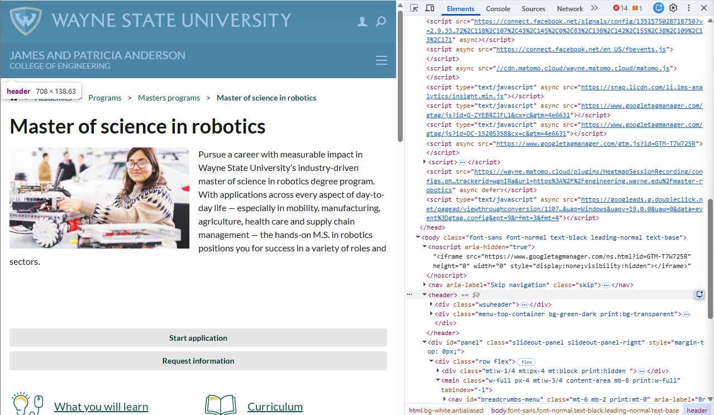
A clear footer
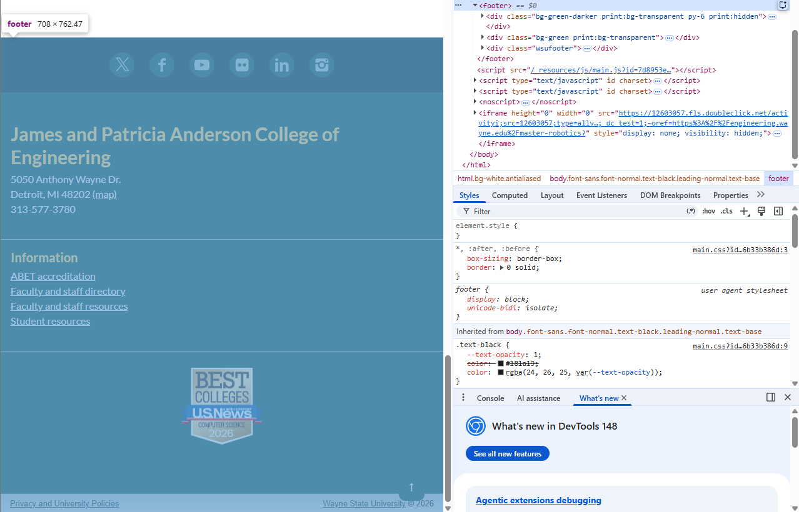
A navigation area with at least 3 links
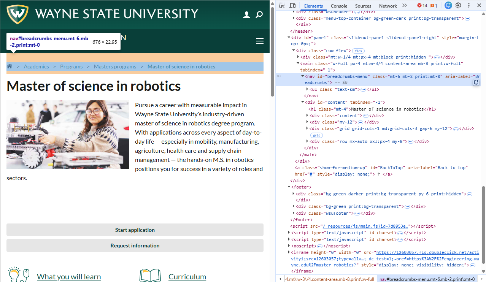
A main content area with body text
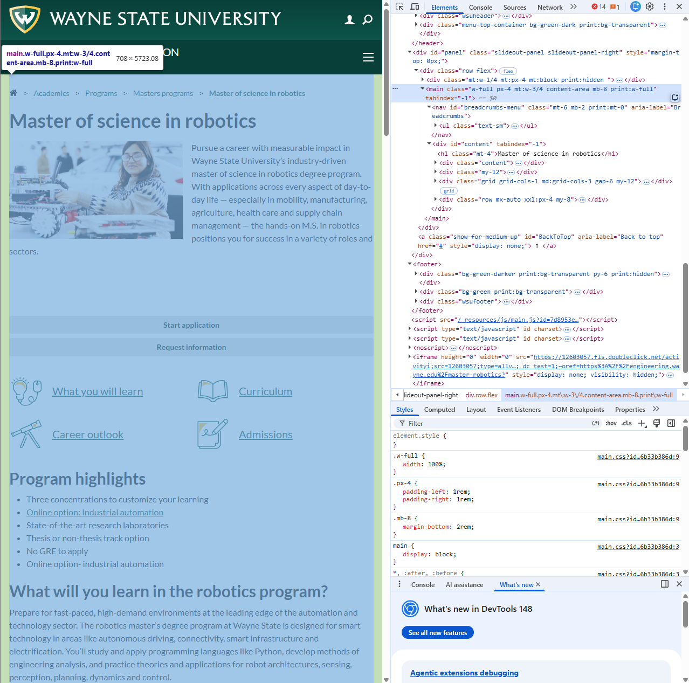
At least one image
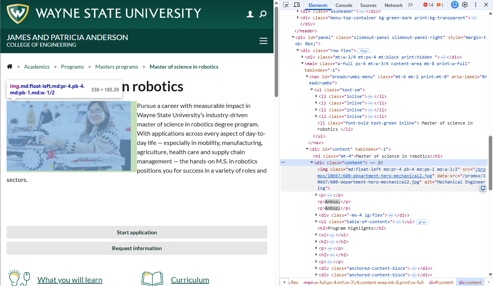
At least two distinct lists (ordered or unordered)
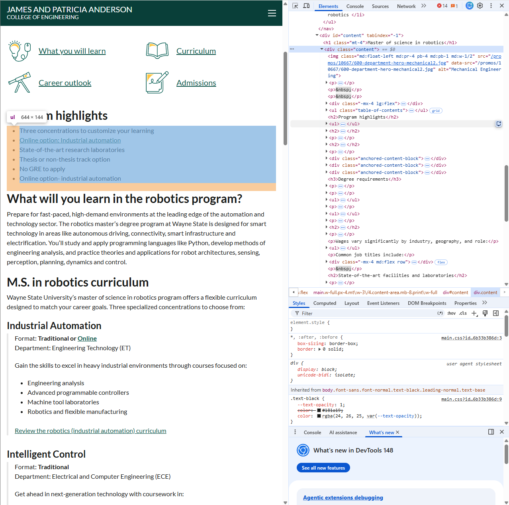
At least three visible heading levels
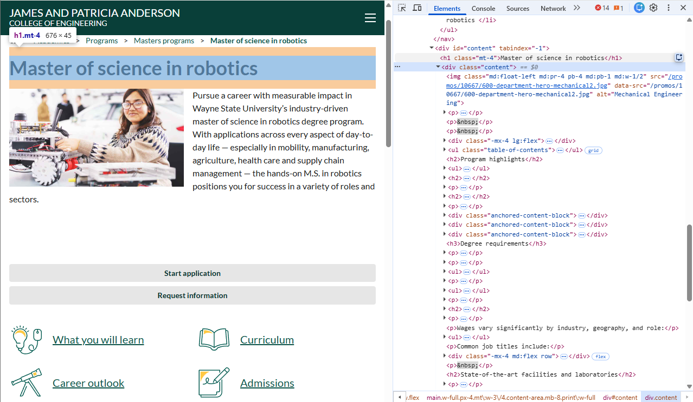
I also chose this page for personal reasons. Robotics genuinely seems interesting, and I never even knew that Wayne State University had a masters program in this particular field. Therefore, the webpage matters more since I have no knowledge of the information. I felt that this would create a more meaningful analysis compared to a program I knew a lot about.
Section-by-Section Layout Analysis
There are four sections that are clear to identify for this webpage:
Site Header
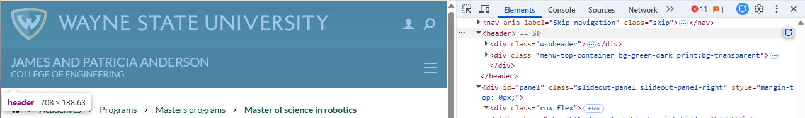
For the header section, I would used the <header> tag. The <header> tag is to be used as a placehodler for introductory content, which it is clearly containing on the webpage. It introduces the university and the college in which the program is housed, which is intorductory information required to understand the rest of the page!
Main Navigation
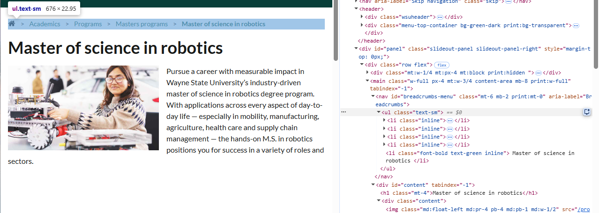
For the navigation section, I would use the <nav> tag. The <nav> tag is, as the name suggests, to be used for site navigation. We clearly see the wayne.edu site's pages listed out in the <nav> tag, including other programs and other masters programs. Therefore, the <nav> tag is being used correctly, as it properly helps the user navigate the wayne.edu website in context to how the user got here!
Primary Content
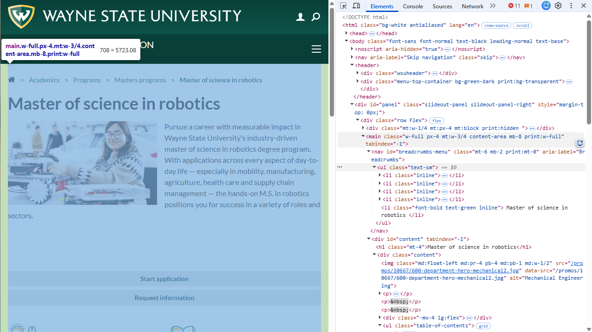
For the primary content of the page, I would use the <main> tag. The <main> tag is used for the primary content of the page, in which most of the images, the paragraphs of text, and other important HTMl elements are contained. This webpage clearly contains most of the site's main content using the <main> tag, so I would definitely say the <main> tag is the right choice!
Page Footer
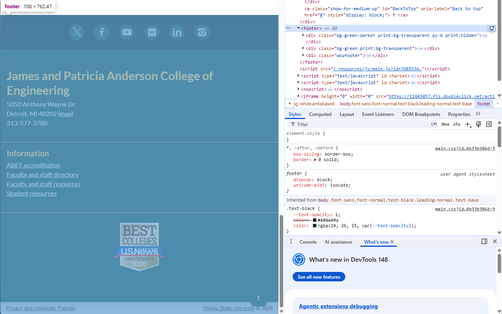
For the footer of the webpage, I would use the <footer> tag. The <footer> tag is best used for contact information and other links that lead to related webpages or related outside website information. In the case of this webpage, the footer contains the address of the school, the social media for the college, and other information links regarding faculty and accreditation, which is what a footer should contain!
Heading Hierarchy
There are quite a few headings contained within the page. We're going to break each of them down, heading by heading in order of which they appear. I'll also comment on whether I thought that was the right choice or not!
- H1: Master of science in robotics: I would assign this H1, as this is the title of the page.
- H2: Program highlights: I would assign this H2, as this is a subsection of the page describing the program highlights.
- H2: What will you learn in the robotics program?: I would assign this H2, as this is another subsection of the page with a paragraph describing what master students would learn in the program.
- H2: M.S. in robotics curriculum: I would assign this H2, as this is yet another subsection of the page describing the robotics curriculum.
- H3: Industrial Automation: I would assign this as H3, as this heading is one of the many things that are contained within the M.S. in robotics curriculum.
- H3: Intelligent Control: I would assign this as H3, as this heading is one of the many things that are contained within the M.S. in robotics curriculum.
- H3: Smart Mobility: I would assign this as H3, as this heading is one of the many things that are contained within the M.S. in robotics curriculum.
- H3: Degree Requirements: I would assign this as H2, as this heading could be its own section under the H1 Heading “Master of science in robotics.” This is the only heading I disagree with.
- Careers with a master's in robotics engineering: I would assign this H2, as this is yet another subsection of the page describing the careers in robotics.
- H2: State-of-the-art facilities and laboratorie: I would assign this H2, as this is yet another subsection of the page describing the state of the art facilities available.
- H2: Tuition and Financial Aid: I would assign this H2, as this is yet another subsection of the page describing the tuition and financial aid available.
- H2: Admission Requirements: I am once again assigning this heading as H2, as this is yet another subsection of the page describing the admission requirements.
- H2: International Students: I would assign this H2, as this is another subsection of the page describing the requirements for international students.
- H2: Application Details: I would reluctantly give this heading the assignment of H2, as I'm not sure where the information should go, but it works alright as an H2 heading.
- H2: Deadlines: I would assign this as H2, as this subsection describes the deadlines for the master of science in robotics.
- H2: Pioneer the future with a master of science in robotics: I would assign this as H2, as this subsection is a nice small descriptor of the program to finish off the webpage.
- H2: Highlights: I would assign this as H2, as the highlights should be their own section, but the highlights section appears a little smaller than it should. That might be a slight oversight in how the code is put into a div tag.
Lists
There are two primary lists we can identify in this webpage:
Program highlights
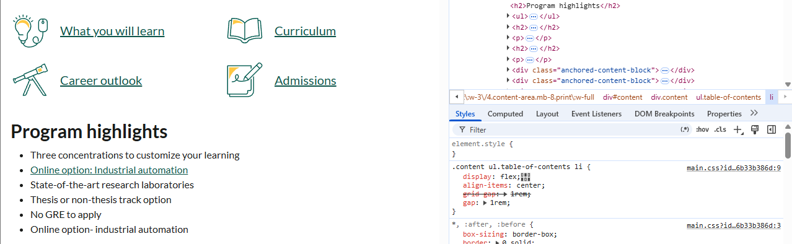
This list should be an unordered list, due to the fact that each list item has no precedence over any other item, nor is there a description required. These reasons make an unordered list ideal over any other kind. There is one linked item within the list, which is an internal link to a more specialized version of the master of science in robotics program. Every other item is plain text, which works fine for the context.
"Common job titles include" list
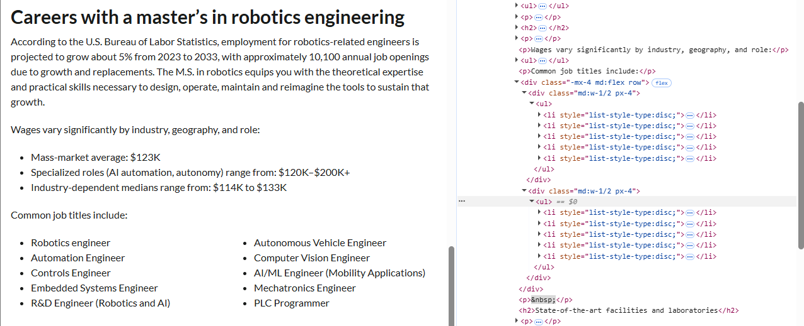
This list should aslo be an unordered list. Once again, all of the items in the list have no precedence over each other. All the items contained in the list are jobs someone can have after they graduate the robotics program. The items are also plain text, but note the use of the div element, which puts two lists side by side of each other, making one nice and neat looking list. This is a great use of space!
Link Analysis
There are two types of links found on this page:
- Internal links, or links that stay within the wayne.edu domain. Examples include:
- What you will learn
- Online option
- Robotics smart mobility
- External links, or links that leave the wayne.edu domain. Examples include:
- Instagram Link
- LinkedIn Link
- US News, Wayne State University Program Ranking
All of the internal links work, and do not open up in a new tab. They also have the CSS element that makes the line disappear when hovering over the link (text-decoration: none), which is a great distinguisher for accessability.
All of the external links work, and all but one do not open up into a new tab. I always expect an external link to open up into a new tab. The US News link did not open up into a new tab, which just seems odd. The page also used a visual indicator to distinguish external links, which was the brightness filter. When someone hovers over the Instagram and LinkedIn icons, it gets brighter. However, the US News has a logo, but no visual indicator that it is a link. I found it by accidently clicking on it, which does not bode well for accessability.
Tables
Normally, a webpage contains a table which better organizes the information within it. In the case of this webpage, there was no table. There is also no information contained within the webpage that requires a table. That's okay, if a webpage does not need something, it is best not to include it!
Accessability Review
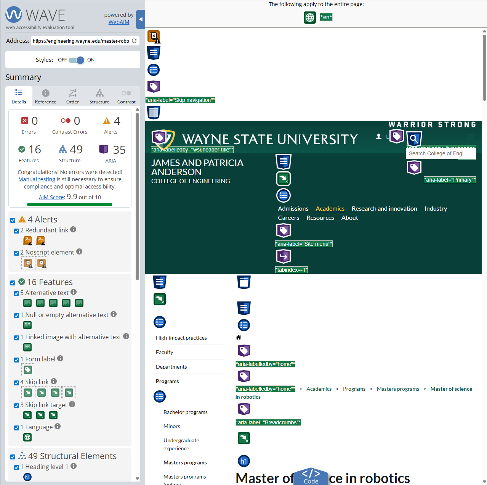
The accessability results are incredibly positive! There are no errors and four alerts, yielding a 9.9/10 AIM score. There were two types of alerts, which are two redundant links and two noscript elements. Redundant links require more navigation for keyboard and screen users, and noscript elements only appear if Javascript is disabled, which is incredibly rare and not very accessable. There is alternative text for the five images contained within the webpage, which is excellent for accessability. The one specific actionable change the website owner could do would be to remove the redundant links within the webpage. There are only two, and by removing the tags, the page becomes slightly less difficult to navigate. However, the website designer could get away with not doing anything, as there are no major errors that affect accessability.
HTML Validation
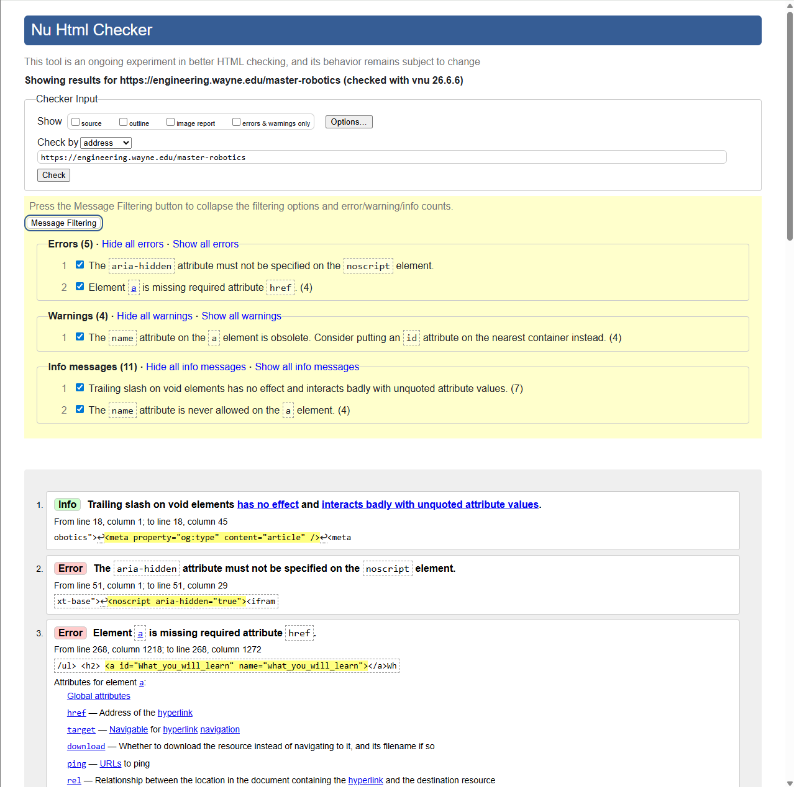
There are five errors, 4 warnings, and eleven info messages, totaling to twenty issues that could be resolved. The most common error is the following:
Element a is missing required atttribute href
This means that at 4 seperate points, the "a href" tag is missing the "href" part, which may lead to rendering problems on the website. This tag is used for links, so what the error translates to is a potential for broken links, which is extremely frustrating from a user end experience. The quick and easy way to fix this issues would be to add "href" to any error that was cited to do with an "a" link tag. That way, there is a gurantee that in any rendering situation that the links work perfectly, rather than a frustrating website experience for a prospective graduate student for the robotics program.
Summary
Overall, the web page does its job very well. The webpage's sections, headings, lists, links, and other features contained within it work very well together to create an informative webpage. The webpage is etremely accessable, and the HTML code itself has very few errors. The most significant issue that was found was within the HTML Validation check, where five errors were located, four of them being the same error. By resolving the "a href" tag errors, which would only take a few minutes, the webpage would render correctly all the time. Every other improvement would be based on opinion, which in terms of information delivery would not make a huige difference. Therefore, I would resolve HTML Validation errors and say the website is informative, accessable, and helpful for anyone visiting it!